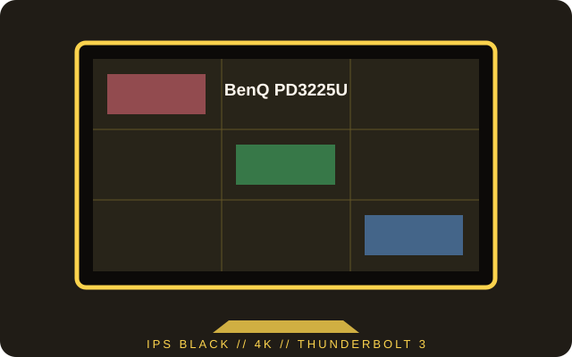

[ INDIVIDUAL COMPONENT // DISPLAYS ]
BenQ PD3225U
A 31.5-inch 4K IPS Black designer monitor with Thunderbolt 3 and a built-in KVM workflow.

IDENTIFICATION: Confirm PD3225U on the rear label and use the matching regional manual for cable and electrical details.
Specifications
| Catalog subcategory | LCD displays |
|---|---|
| Exact product | BenQ DesignVue PD3225U |
| Panel and native resolution | 31.5-inch IPS Black LCD, 3840 × 2160 (16:9) |
| Native refresh | 60 Hz at native resolution |
| Luminance / contrast | 400 cd/m² maximum; 2000:1 typical native contrast |
| Inputs / companion ports | HDMI 2.0 × 2, DisplayPort 1.4, Thunderbolt 3 upstream (up to 85 W) and downstream (up to 15 W), USB hub |
| Stand / VESA | Height, tilt, swivel and pivot adjustment; 100 × 100 mm VESA mounting |
| Power / compatibility | AC mains input; follow the supplied regional power cord and label. A Thunderbolt 3-capable host and certified cable are needed for the single-cable video/data path; charging does not exceed the listed port budget. |
Preservation notes
Store the factory calibration report and color profile with the unit. Record the active color mode, connection, KVM routing and firmware; different input and color-depth combinations can constrain available timing.
Manufacturer documentation and sources
- BenQ — PD3225U DesignVue monitorOfficial product specification and workflow information.
- BenQ Support — PD3225U downloads and manualManufacturer downloads and model documentation.